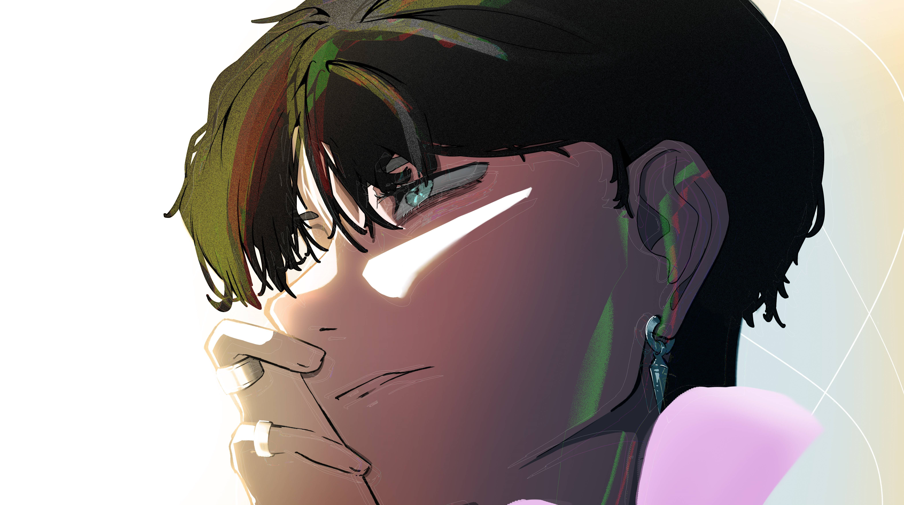

1 / 3
Most recent piece I've finished; planning on using it as the template for my art website (whenever I finish it)
2 / 3

This is my most recent stylized self-portrait.
3 / 3
The first project I worked on after a little hiatus from art.
3 / 3
Most recent realistic portrait I've worked on.
3 / 3
This is the original image for my website when I made it on Weebly years ago.
3 / 3
Oryx from the video game "Destiny"
3 / 3
The first landscape I ever made digitally in my high school freshman year.
❮
❯